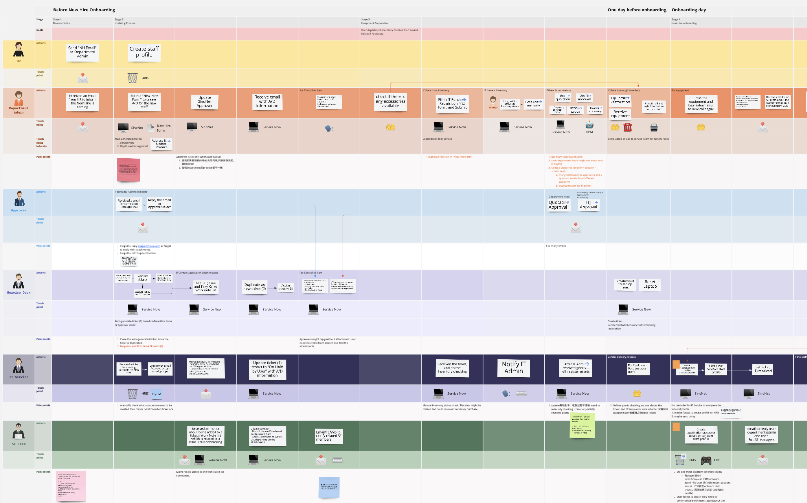
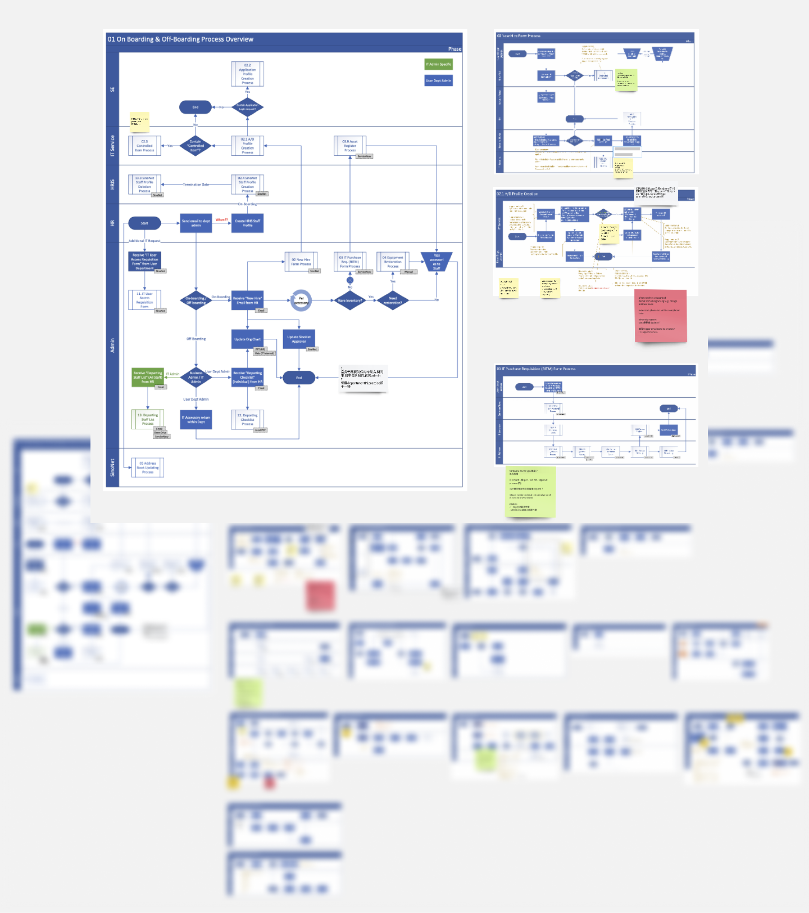
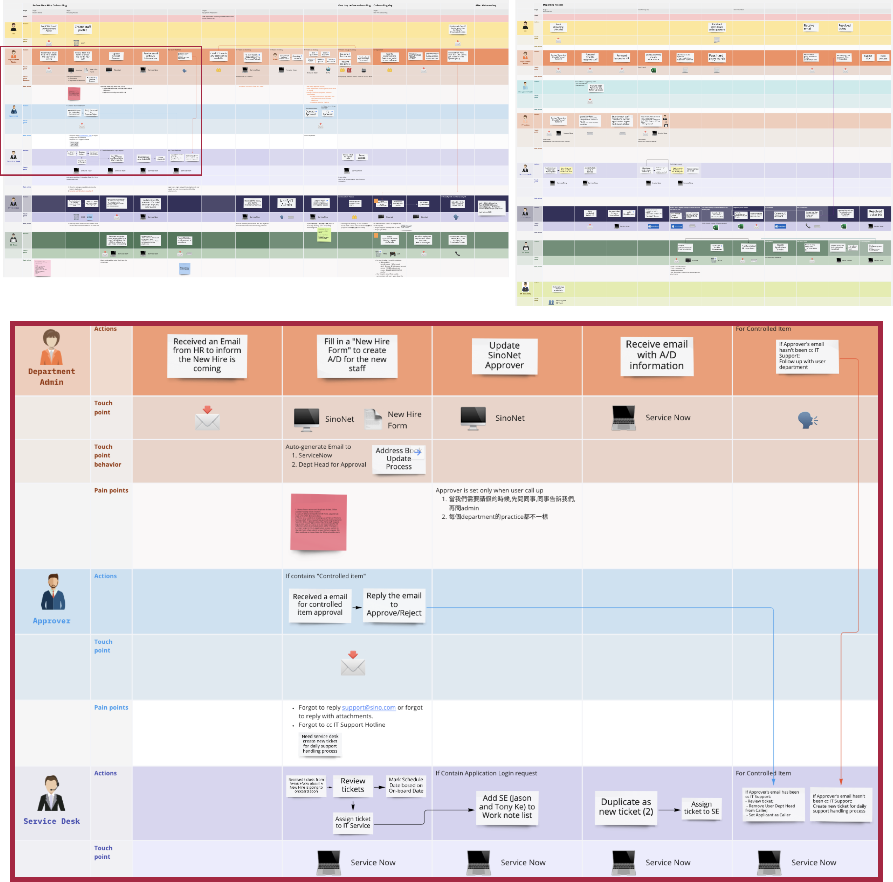
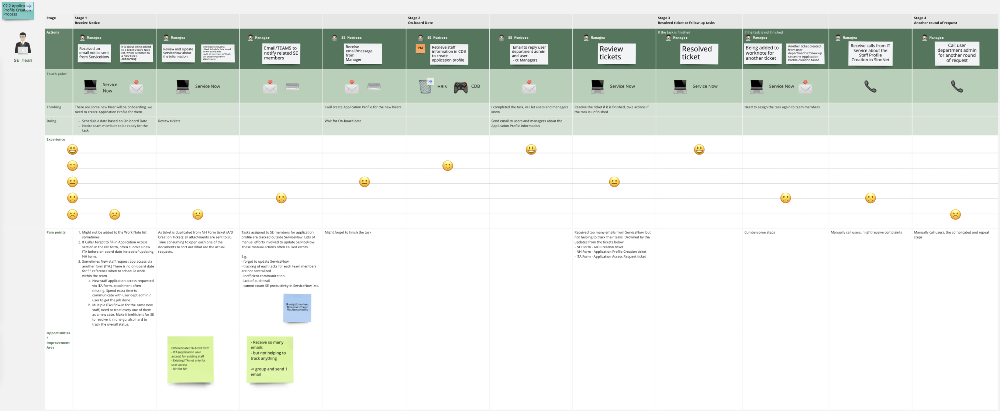
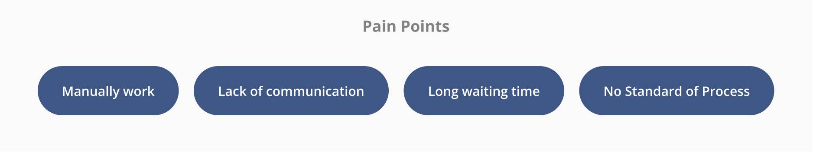
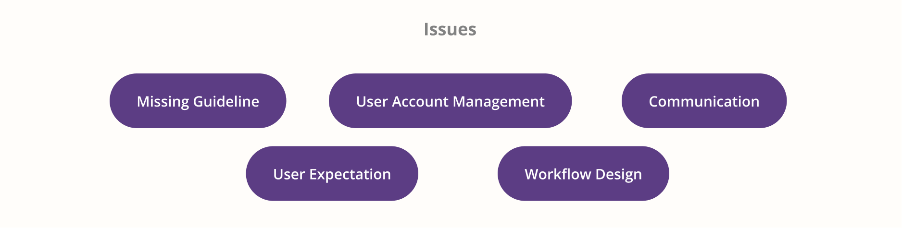
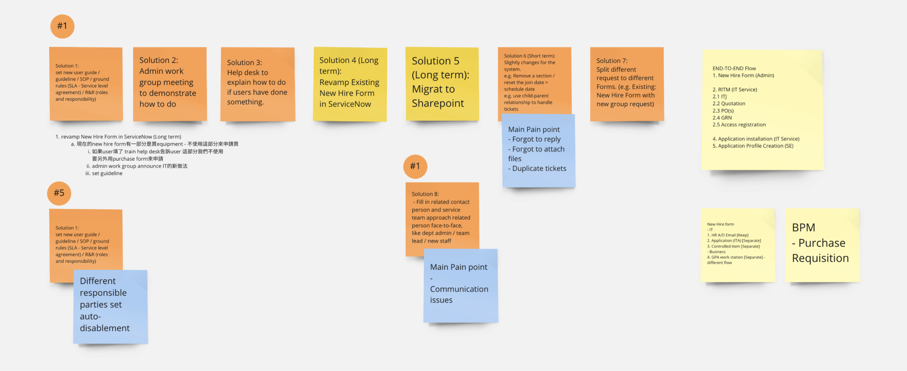
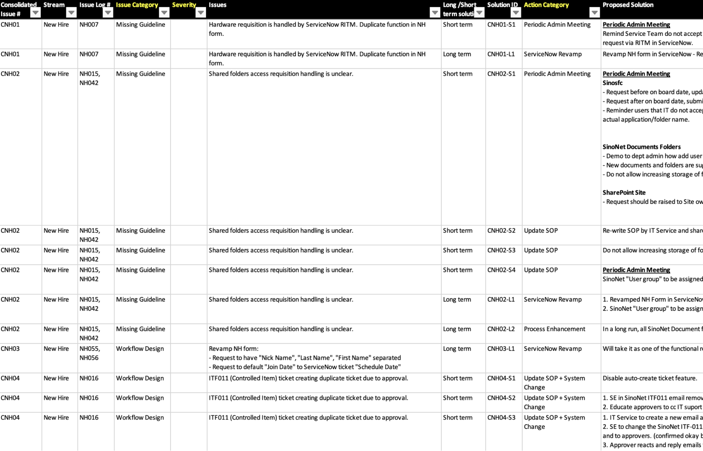

Journey Map Case Study
Background
There was so many redundant tasks for each parties on the New Hire / on-boarding and Off-boarding process. We need to review the whole process and identify pain points. And find some solutions for improving each part of the process.
Problem Statement
- Roles and Responsibilities are not clear
- No SOP for some processes
- Too many applications to use and some applications/forms are abused
- Too many manual works and redundant steps
Goal
- Improve the workflow based on identified pain points
- Define Roles and Responsibility, and communicate with different teams about the solutions
- Bring in tools for improving efficiency
My Role
Rsearcher
- Analyze existing workflow and pain points
- Make a holistic view for the whole process
- Purpose viable SOP (Work with BA)
1. Process
1.1
Identify User groups and function usage
1.2
Huge process provided by BA from user interview, mark quotes and user pain points for reference

2. Consolidation
2.1
- Define roles and what process they are involved.
- See which roles will work together in one process
2.2
Create a huge process map for the entire workflow

2.3
Creating experience journey map for each related users. Define consolidate pain points and find out potential improvement area

3. Solution & Conclusion
3.1
Summarise pain points and issue categories


3.2
Summarise all solutions with short-term and long-term

3.3
Work with BA for documentation and communicate with all BUs about the solution
